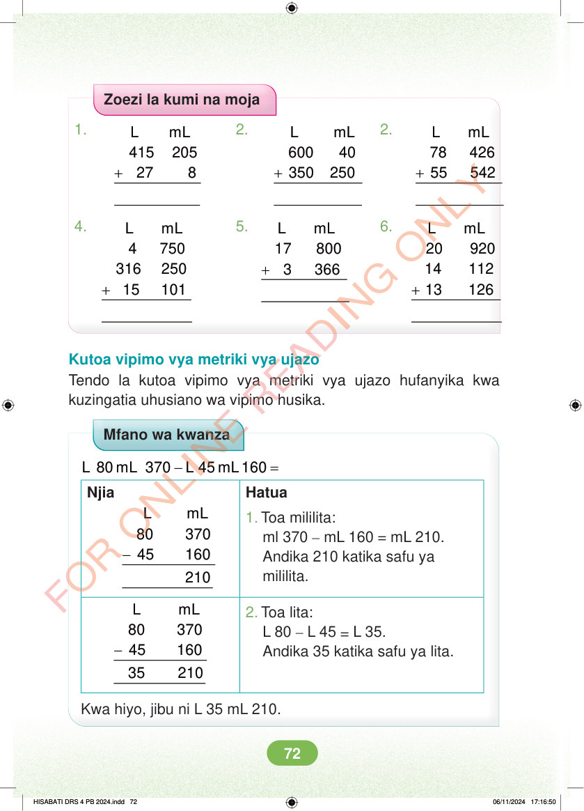

Zoezi la kumi na moja 2. 2. 1. + + + L mL 415 205 27 8 L mL 78 426 55 542 L mL 600 40 350 250 4. 5. 6. + L mL 17 800 3 366 + + L mL 4 750 316 250 15 101 L mL 20 920 14 112 13 126 Kutoa vipimo vya metriki vya ujazo Tendo la kutoa vipimo vya metriki vya ujazo hufanyika kwa kuzingatia uhusiano wa vipimo husika. Mfano wa kwanza - = L 80 mL 370 L 45 mL 160 Njia Hatua - L mL 80 370 45 160 1. Toa mililita: ml 370 – mL 160 = mL 210. Andika 210 katika safu ya mililita. - L mL 80 370 45 160 2. Toa lita: L 80 – L 45 = L 35. Andika 35 katika safu ya lita. 35 210 Kwa hiyo, jibu ni L 35 mL 210. HISABATI DRS 4 PB 2024.indd 72 HISABATI DRS 4 PB 2024.indd 72 06/11/2024 17:16:50 06/11/2024 17:16:50